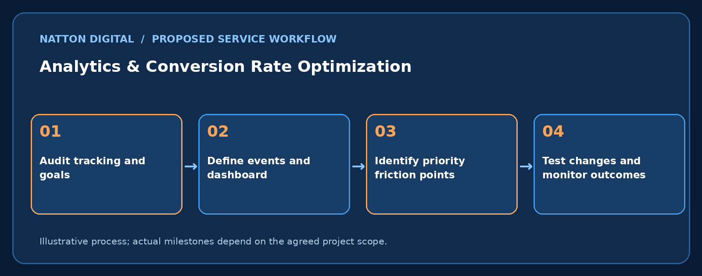

Understand user journeys and improve the steps that lead to genuine enquiries or sales.
✓ Goal-focused strategy
✓ Clearly defined deliverables
✓ Progress reporting
✓ Human support
Digital marketing is easier to improve when you can understand what visitors do and where they stop. Analytics and conversion optimisation combine accurate measurement with practical changes to page design, copy and forms.
The starting point is a tracking and consent audit, followed by a clear event plan, dashboards and carefully prioritised tests. Small data sets should be interpreted cautiously and results are not guaranteed.
Use trustworthy data.
Find areas needing improvement.
Link marketing efforts to outcomes.
A practical breakdown of the capabilities that can be included in an agreed service scope.
Review GA4 and related configurations.
Define form, call and purchase events.
Apply appropriate visitor permission controls.
Visualise step-by-step journeys.
Check clarity and friction.
Reduce unnecessary fields.
Design safe tests.
Report actionable results.

SaaS: demo requests
E-commerce: checkout completion
Education: enrolment forms
No. Important business events need configuration and verification.
Not necessarily; improvements require testing and traffic.
Consent and legal requirements need an approved implementation and review.
Share your goal and current challenges. We can propose scope, timeline, responsibilities and a suitable starting point.